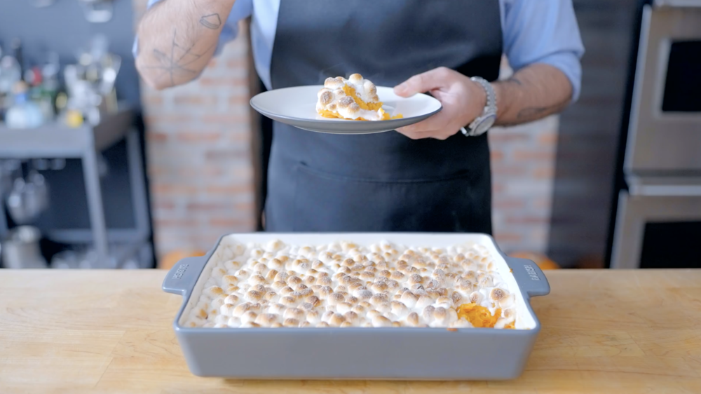

Sweet Potato Casserole

Description
A perfect dish for thanksgiving, this is Babish's spin on the sweet potato dish that starred in that one Friends episode! And it looks absolutely mouth-watering! We will be going for his simple recipe of course, but the gourmands are welcome to try the complex dish from here.
Ingredients
- 1 Tbsp + 1 ½ tsp kosher salt, divided
- ~4 lbs sweet potatoes, peeled + cut into 1” pieces
- 8 oz light brown sugar
- 4 oz unsalted butter, melted
- 1 tsp vanilla extract
- 10 oz mini marshmallows (about 1 bag)
Steps
- Preheat the oven to 300 °F with a convection fan (or 325 °F without fan). Grease a 9x13 pan with nonstick spray.
- Fill a large pot of water and season with 1 tablespoon of salt.
- Add the sweet potatoes to the pot and bring the water to a boil.
- Turn the heat down to a simmer and cover the pot. Cook the potatoes until completely tender, about 18-20 minutes.
- Drain the potatoes and transfer them to a large bowl.
- Using a potato masher, mash the cooked potatoes until completely smooth.
- Add the sugar, butter, and remaining 1 ½ teaspoons salt to the bowl and fold to combine.
- Spread the mixture into an even layer in the 9x13 pan. Add the marshmallow to the top in one layer.
- Bake the casserole for 25-30 minutes or until golden brown and heated through.
Back to main